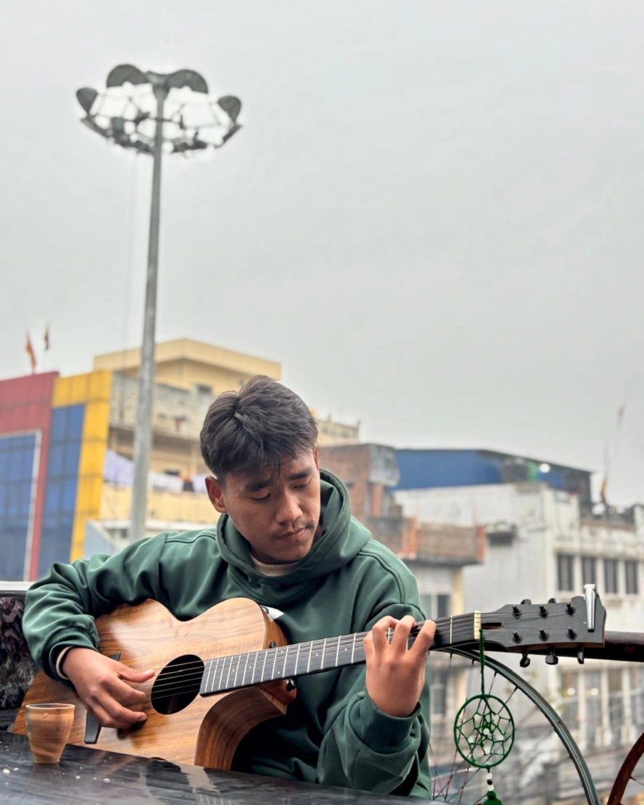

Hi, I'm Anish
Anish Baral Magar, born in Kolkata (2006), 18-year-old from Surkhet, Nepal, now living in Nepalgunj. A music lover, basketball player, and tech enthusiast, dreams of becoming a skilled software developer and video editor. Passionate about guitar and creativity, balances art with technology. With determination and curiosity, Anish is building his skills to innovate while enjoying music, sports, and new experiences.
Education
+2 Management Stream
BrightLand Secondary College : 2081-2082
SEE
Shree Buddha English Medium High School : 2079
Skills
HTML, CSS, C, Video Editing